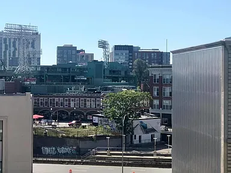

Neighborhood access
Unmatched convenience for Boston professionals.
The location is especially convenient for doctors, dentists, medical professionals, researchers, fellows, residents, professors, and other professionals who want a central home base close to work, dining, parks, transit, and city life.
Kenmore T StationWalkable
Longwood Medical AreaNearby
Boston UniversityWalkable
Fenway ParkWalkable
Charles RiverWalkable
Newbury StreetWalkable
Restaurants & cafésNearby
Back Bay / FenwayNearby

Fenway-facing
Views toward one of Boston’s most recognizable landmarks.
The 6th-floor residence faces Fenway Park, adding a distinct Boston feel to the apartment and helping the property stand out in a competitive rental market.